The first figure following the title shows a panoramic view of the entire lecture board. The following note presents figures and transcript in the order they appear in the lecture.
Indefinite integrals of x raised to a power (2)
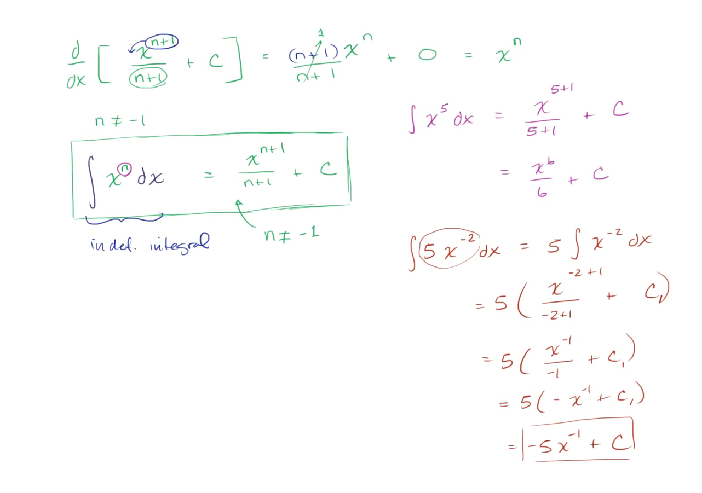
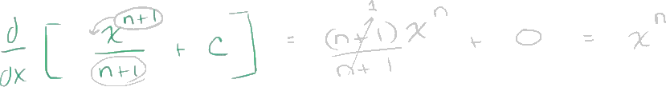
Let's take the derivative with respect to x of x to the n plus 1-th power over n plus 1 plus some constant c.
And we're going to assume here, because we want this expression to be defined, we're going to assume that n does not equal negative 1.
If it equaled negative 1, we'd be dividing by 0, and we haven't defined what that means. So let's take the derivative here.
So this is going to be equal to-- well, the derivative of x to the n plus 1 over n plus 1, we can just use the power rule over here. So our exponent is n plus 1. We can bring it out front. So it's going to be n plus 1 times x to the-- I want to use that same color. Colors are the hard part-- times x to the-- instead of n plus 1, we subtract 1 from the exponent. This is just the power rule. So n plus 1 minus 1 is going to be n. And then we can't forget that we were dividing by this n plus 1. So we have divided by n plus 1. And then we have plus c. The derivative of a constant with respect to x-- a constant does not change as x changes, so it is just going to be 0, so plus 0. And since n is not equal to negative 1, we know that this is going to be defined. This is just going to be something divided by itself, which is just going to be 1. And this whole thing simplifies to x to the n.
So the derivative of this thing-- and this is a very general terms-- is equal to x to the n. So given that, what is the antiderivative-- let me switch colors here.
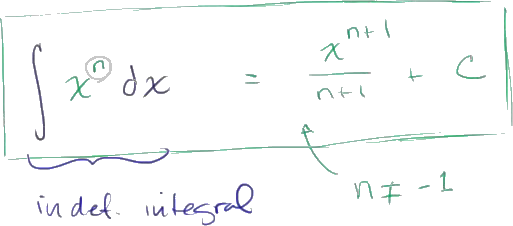
What is the antiderivative of x to the n? And remember, this is just the kind of strange-looking notation we use. It'll make more sense when we start doing definite integrals. But what is the antiderivative of x to the n? And we could say the antiderivative with respect to x, if we want to. And another way of calling this is the indefinite integral. Well, we know this is saying x to the n is the derivative of what? Well, we just figured it out. It's the derivative of this thing, and we've written it in very general terms. We're actually encapsulating multiple constants here. We could have x to the n plus 1 over n plus 1 plus 0, plus 1, plus 2, plus pi, plus a billion. So this is going to be equal to x to the n plus 1 over n plus 1 plus c. So this is pretty powerful. You can kind of view this as the reverse power rule. And it applies for any n, as long as n does not equal negative 1. Let me make that very clear. n does not equal negative 1.
Once again, this thing would be undefined if n were equal to negative 1. So let's do a couple of examples just to apply this-- you could call it the reverse power rule if you want, or the anti-power rule.
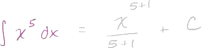
So let's take the antiderivative of x to the fifth power.
What is the antiderivative of x to the fifth? Well, all we have to say is, well, look, the 5 is equal to the n.
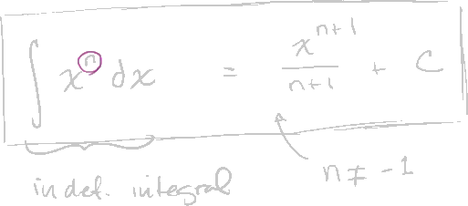
We just have to increment the exponent by 1.
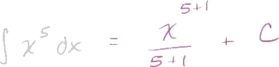
So this is going to be equal to x to the 5 plus 1 power. And then we divide by that same value. Whatever the exponent was when you increment it by 1, we divide by that same value, divided by 5 plus 1. And of course, we want to encapsulate all of the possible antiderivatives, so you put the c right over there.
So this is going to be equal to x to the sixth over 6 plus c.
And you can verify. Take the derivative of this using the power rule, you indeed get x to the fifth. Let's try another one. Let's try-- now we'll do it in blue.
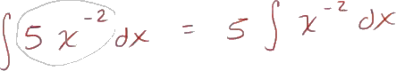
Let's try the antiderivative of-- let's make it interesting. Let's make it 5 times x to the negative 2 power dx. So how would we evaluate this? Well, one simplification you can do-- and I haven't rigorously proven it to you just yet-- but we know that scalars can go in and out of the derivative operator when you're multiplying by a scalar. So this is, indeed, equal to 5 times the antiderivative of x to the negative 2 power, dx.
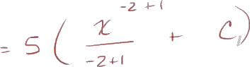
And now we can just use, I guess we could call it this anti-power rule, so this is going to be equal to 5 times x to the negative 2 power plus 1 over the negative 2 power plus 1 plus some constant right over here.
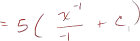
And then we can rewrite this as 5 times negative 2 power plus 1 is x to the negative 1 over negative 2 plus 1 is negative 1, plus some constant.
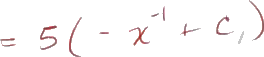
And this is equal to 5 times negative x to the negative 1 plus some constant.
And then if we want, we can distribute the 5.
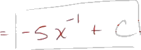
So this is equal to negative 5x to the negative 1. Now, we could write plus 5 times some constant, but this is just an arbitrary constant.
So this is still just an arbitrary constant. So maybe we could [INAUDIBLE] this.
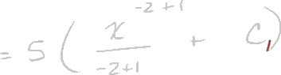
If you want it to show that it's a different constant, you could say this is c1, c1, c1.
If you want it to show that it's a different constant, you could say this is c1, c1, c1.
If you want it to show that it's a different constant, you could say this is c1, c1, c1.
You multiply 5 times c1, you get another constant. We could just call that c, which is equal to 5 times c1. But there you have it. Negative 5x to the negative 1 plus c. And once again, all of these, try to evaluate the derivative, and you will see that you get this business, right over there.
And once again, all of these, try to evaluate the derivative, and you will see that you get this business, right over there.